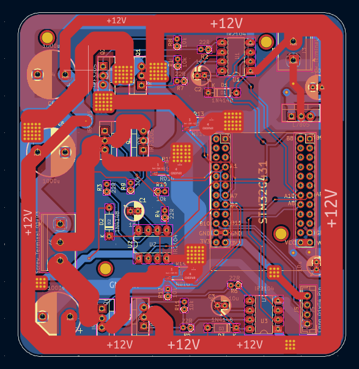
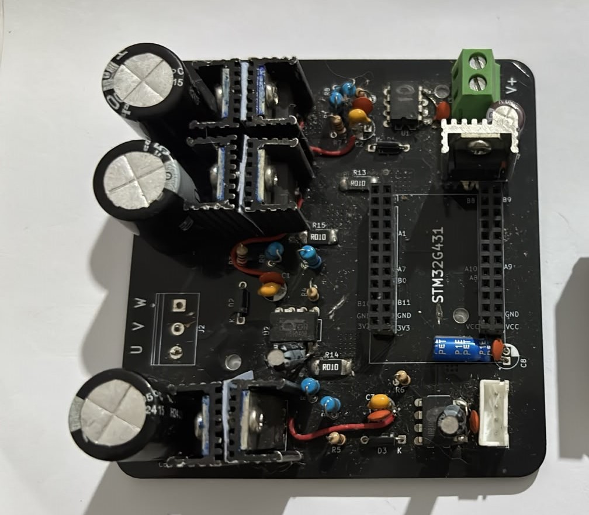
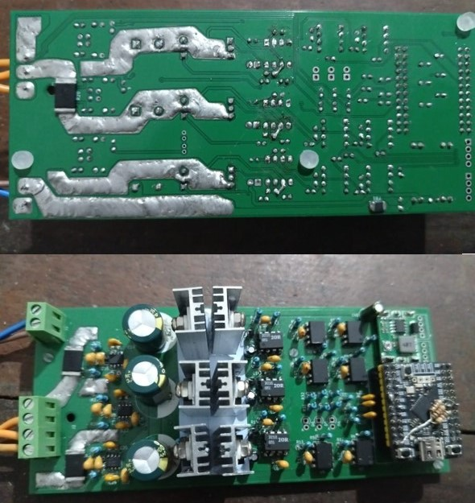
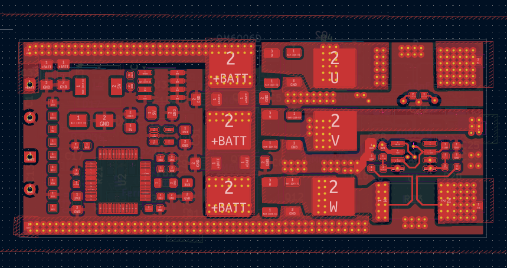
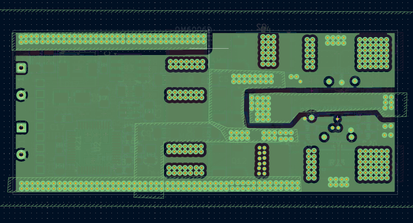
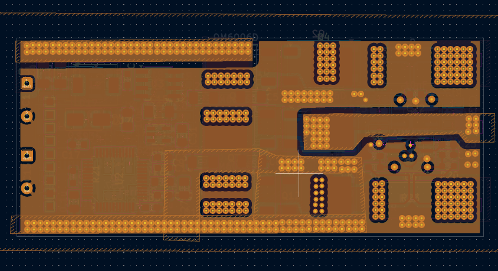
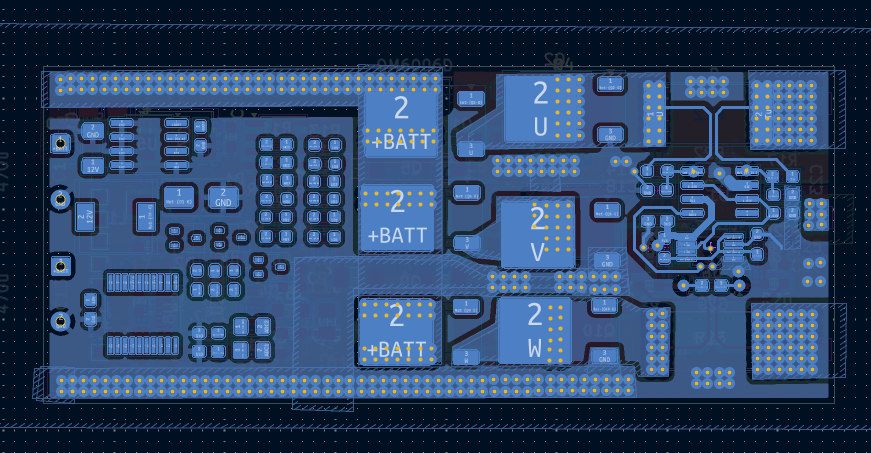
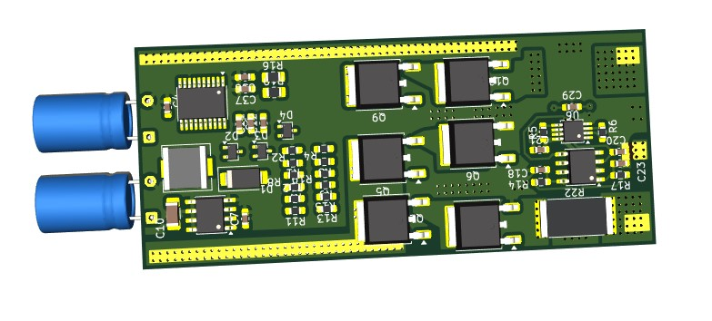
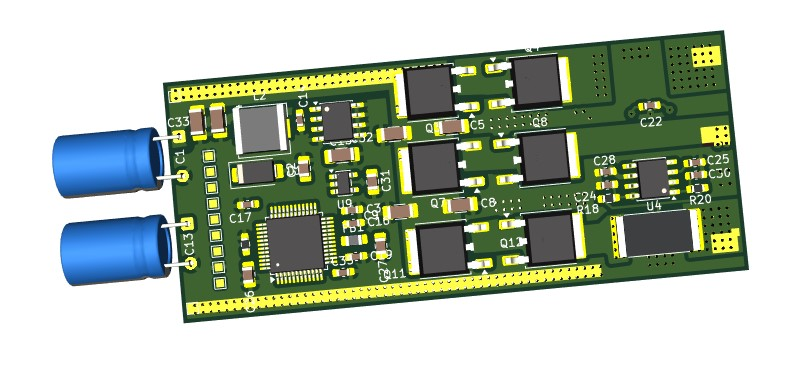
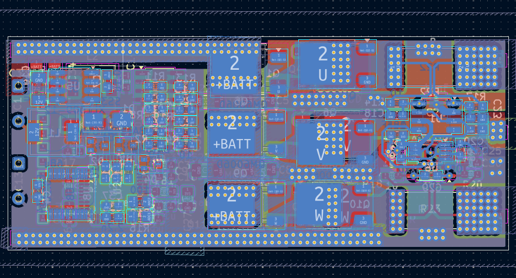

FOC Driver Iterations
Overview
Three generations of FOC driver hardware — a v1 prototype, a v2 integrated board, and a v3 four-layer revision currently in design. Each version was driven by a specific limitation from the previous one.
v1 · First FOC board
First purpose-designed FOC driver PCB — a three-phase power stage on a black board, paired with a hand-wired gate driver and control stage on perfboard beside it. The layout shows the power routing for the three half-bridge phases (+12V rails running around the board perimeter, phase outputs U/V/W on the left edge).


v2 · Integrated board
First fully integrated FOC driver — everything on one green PCB, including the gate drivers, power stage, and control front end. This is the board running the current bare-metal sensorless FOC firmware at 24 kHz. Full firmware details on the FOC ESC page.

v3 · Four-layer revision (in progress)
Next revision currently in layout. The design goal here is specific: build a board whose thermal behavior can be predicted accurately by the KiCad Digital Twin before fabrication. The four-layer stack — top copper, two inner layers, bottom copper — is modeled for thermal simulation, so the twin's per-component θja and 2D thermal diffusion fields can be checked against a real board once it's fabricated.






